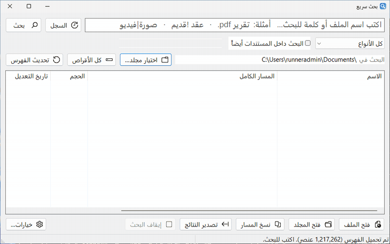

InstaFind بحث سريع
ابحث عن أي ملف على جهازك أثناء الكتابة، بالعربية أو الإنكليزية، وحتى داخل ملفات PDF وWord.
مجاني · مفتوح المصدر · لويندوز
برامج صغيرة تعمل فوراً، بلا إنترنت وبلا حساب، وتبقي ملفاتك على جهازك. كل برنامج يتحدّث وحده، بالعربية والإنكليزية.

كل برنامج يحل مشكلة واحدة ويحلها جيداً. مجانية بالكامل، وتعمل على ويندوز 10 و11.
ابحث عن أي ملف على جهازك أثناء الكتابة، بالعربية أو الإنكليزية، وحتى داخل ملفات PDF وWord.

مهام وملاحظات وتذكيرات تبقى ظاهرة على الشاشة حتى تتعامل معها، مع تكرار مرن ونسخ احتياطي موثوق.
محادثة وبرمجة مع نماذج الذكاء الاصطناعي على جهازك عبر Ollama، بلا إنترنت، مع مساعدين يجيبون من ملفاتك فقط.
 InstaFind · بحث سريع
InstaFind · بحث سريع
يفهرس كل أقراصك مرة واحدة، ثم يُظهر النتائج أثناء الكتابة. ويفهم العربية كما تُكتب فعلاً.

 ذكرني · Remember Me
ذكرني · Remember Me
تطبيق مهام وملاحظات وتذكيرات لويندوز، تبقى نافذة التذكير ظاهرة حتى تتعامل معها، فلا يضيع موعد بين الإشعارات.

Lemon · الذكاء المحلي
واجهة مثل ChatGPT لنماذج Ollama المحلية. محادثاتك وملفاتك لا تغادر جهازك أبداً.

نفس المبادئ في كل برنامج نصنعه.
يفتح فوراً ولا يثقل جهازك. أغلب برامجنا ملف واحد لا يحتاج تثبيتاً.
كل شيء يعمل على جهازك. لا حساب، ولا خوادم، ولا انتظار.
ملفاتك ومحادثاتك لا تغادر جهازك، ولا يوجد أي تتبّع.
اتجاه صحيح من اليمين لليسار في كل مكان، وبحث يفهم الهمزات والتاء المربوطة.
كل الكود منشور على GitHub برخصة MIT، ويمكن لأي أحد مراجعته.
البرامج تتحدّث وحدها بنقرة، وكل إصدار يُبنى ويُختبر آلياً قبل نشره.
نعم، مجانية بالكامل ومفتوحة المصدر برخصة MIT. لا إعلانات ولا اشتراكات.
لا. كل البرامج تعمل على جهازك دون اتصال. الإنترنت يُستخدم فقط عند التحقق من التحديثات أو تنزيل نموذج ذكاء اصطناعي في Lemon.
ويندوز 10 و11. InstaFind يعمل أيضاً على أجهزة ARM64 و32 بت.
لأن الملفات غير موقّعة رقمياً بعد. اضغط «مزيد من المعلومات» ثم «تشغيل على أي حال». الكود كله منشور ويمكن مراجعته.
افتح «Issue» في صفحة البرنامج على GitHub، بالعربية أو الإنكليزية.